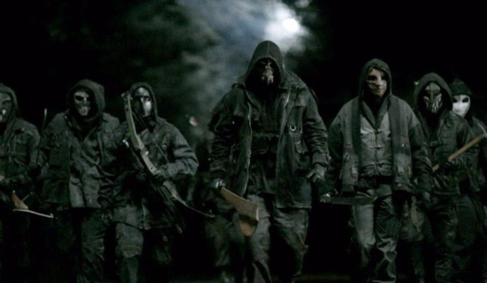

El grupo de Los Segadores esta formado por hombres y mujeres que fueron a la guerra de Afganistán. El grupo gradualmente comenzó a atacar asentamientos de sobrevivientes y masacrar a sobrevivientes inocentes por orden de Pope su lider, a pesar de que estos grupos no les habían hecho nada a los Segadores.